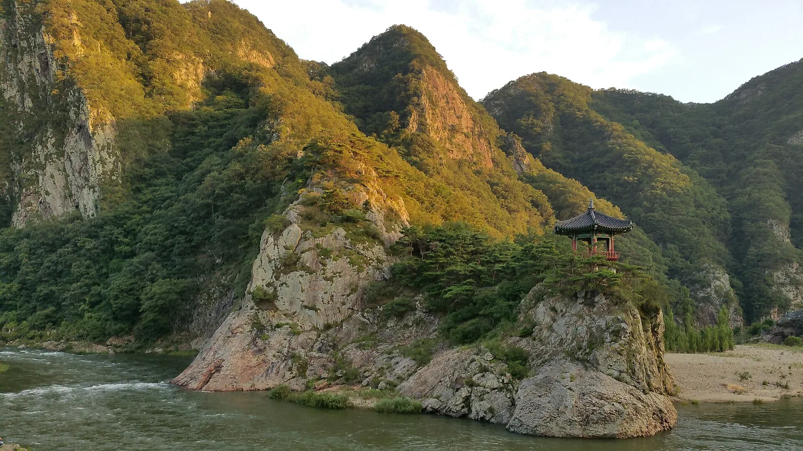
▲ 해 질 녘 비스듬한 햇빛이 물든 충북 영동 월류봉. 강 쪽으로 돌출된 바위 위 정자가 월류정이다 사진=Wikimedia Commons (Shinfull, CC BY-SA 3.0)
1. 왜 월류봉인가 — 강 위에 걸린 여섯 봉우리
충북 영동군 황간면 원촌리의 월류봉(月留峰)은 '달이 머무르는 봉우리'라는 이름 그대로, 강가 절벽 위로 달이 걸리는 풍경 때문에 붙은 이름이다. 영동군 문화관광 안내에 따르면 월류봉은 높이 약 400m로, 동서로 뻗은 능선이 6개의 봉우리로 이어진다. 봉우리 아래로는 금강 상류인 초강천이 흐르고, 영동군은 약 200m 높이의 수직 암벽이 그 아래를 흐르는 물줄기와 어우러진다고 소개한다. 큰 관광단지나 입장 시설이 따로 없어 이름에 비해 덜 알려졌지만, 경부고속도로 황간IC에서 가까워 차로 들르기 좋은 '숨은 절경'에 가깝다.
이 일대의 여덟 경승지를 묶어 부르는 이름이 한천팔경(寒泉八景)이다. 조선 후기 유학자 우암 송시열이 머물던 한천정사에서 이름을 따왔다고 전해진다. 1경 월류봉부터 2경 화헌악, 3경 용연대, 4경 산양벽, 5경 청학굴, 6경 법존암, 7경 사군봉, 8경 냉천정까지 여덟 곳이 강을 따라 이어진다. 강 쪽으로 튀어나온 바위 위에 서 있는 정자가 월류정으로, 월류봉 사진에 거의 빠지지 않고 등장하는 장면이다.
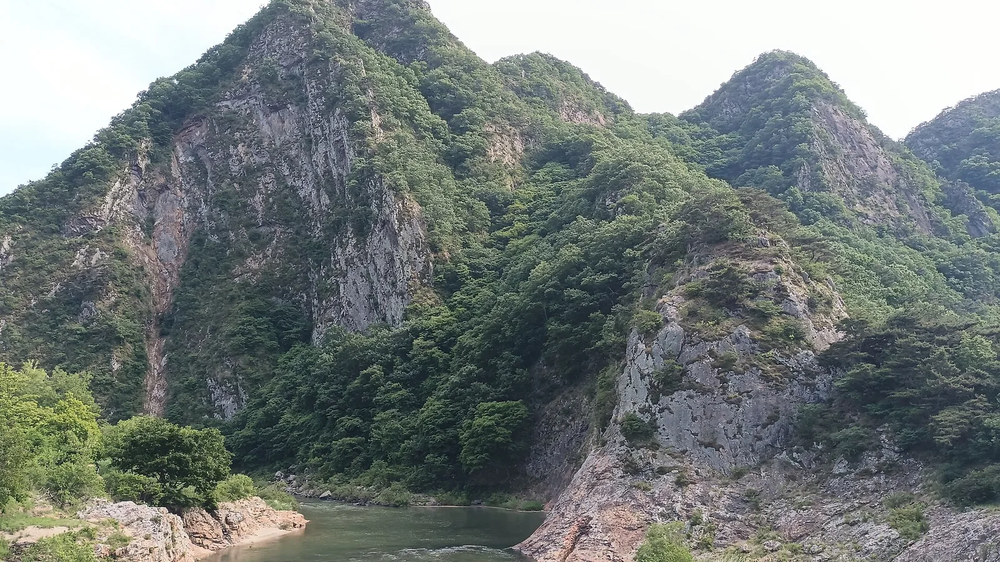
▲ 영동군 황간면 원촌리의 월류봉. 가파른 암벽이 이어진 봉우리 아래로 초강천이 휘돌아 흐른다 사진=Wikimedia Commons (Dittwjfsdgkvkdjg, CC BY-SA 3.0)
2. 가는 법과 주차 — 황간IC에서 4번 국도로
자가용으로는 경부고속도로 황간IC를 이용하는 것이 가장 빠르다. 영동군 관광 안내는 황간나들목을 나와 4번 국도로 진입하는 경로를 안내한다. 서울·경기 방면에서는 경부고속도로를 따라 내려오다 황간IC에서 빠지면 되고, 대구·부산 방면에서도 같은 IC를 쓴다. 고속도로 본선에는 황간휴게소가 있어 장거리 운전 중 쉬어 가기도 좋다.
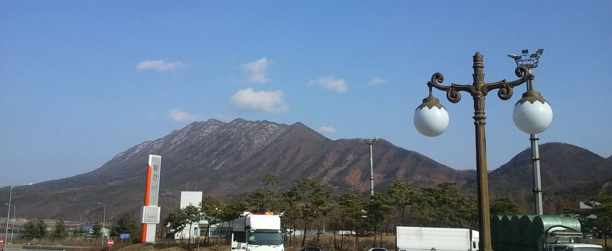
▲ 경부고속도로 황간휴게소에서 바라본 겨울 산 능선. 황간IC는 월류봉으로 향하는 가장 가까운 고속도로 출입구다 사진=Wikimedia Commons (kykoh, CC BY 3.0)
둘레길 출발점은 월류봉 광장이다. 충청북도 관광 포털 '충북나드리'는 월류봉 둘레길 위치를 황간면 원촌동1길 47로 안내하며, 한국관광공사 대한민국 구석구석은 주차가 가능하다고 적고 있다. 다만 두 공식 안내 모두 주차장 면수나 요금은 명시하지 않았다. 일부 여행 매체는 무료라고 소개하지만 공식 확인은 되지 않은 만큼, 요금·면수는 영동군 문의처(043-745-7741)로 확인하는 편이 안전하다.
월류봉 능선을 직접 오르는 산행객이라면 출발점이 다르다. 영동군 관광 안내(관광답사기)는 황간면 마산리 555 에넥스 황간공장 주차장을 들머리로 소개하며, 평일에는 공장 수위실에 양해를 구하고, 휴일에는 탐방객에게 주차장을 개방한다고 적었다. 기업 부지인 만큼 현재 운영 여부는 방문 전 확인이 필요하다. 이 코스는 월류봉~1~5봉~한천정을 잇는 3.4km 종주형으로 순수 이동시간이 약 2시간 30분이며, 5봉에서 한천정으로 내려오는 구간에 60도 가량의 급경사가 있다고 영동군은 안내한다.
| 항목 | 내용 | 출처·비고 |
|---|---|---|
| 고속도로 IC | 경부고속도로 황간IC → 4번 국도 | 영동군 문화관광 |
| 둘레길 출발점 | 월류봉 광장(황간면 원촌동1길 47 일원) | 충북나드리 |
| 주차 | 주차 가능(면수·요금 공식 표기 없음) | 대한민국 구석구석, 방문 전 확인 |
| 능선 산행 들머리 | 에넥스 황간공장 주차장(마산리 555), 휴일 개방 | 영동군 관광답사기, 방문 전 확인 |
| 입장료·운영 | 무료, 연중무휴·24시간 | 대한민국 구석구석 |
| 문의 | 043-745-7741(영동군 관광 문의) | 대한민국 구석구석 |
3. 월류봉 둘레길 8.4km, 구간별로 보면
월류봉 둘레길은 월류봉 광장에서 백화산 자락의 반야사까지 이어지는 총 8.4km 걷기 길이다. 물길을 따라 난 길이라 오르내림이 크지 않고, 대한민국 구석구석은 데크 구간이 많아 무장애로 걷기 쉬운 곳이 많다고 소개한다. 충북나드리 안내에 따르면 노면을 정리하고 야자매트를 깔았으며, 목교와 쉼터도 마련돼 있다. 세 구간의 이름은 모두 '소리'로 끝난다.
| 구간 | 경로 | 거리 | 특징 |
|---|---|---|---|
| 1구간 여울소리길 | 월류봉 광장 → 원촌마을 → 석천 물가 길 → 완정교 | 2.7km(영동군) / 2.6km(대한민국 구석구석) | 석천과 초강천이 만나는 여울을 따라 걷는 대표 구간, 월류봉·기암괴석 조망 |
| 2구간 산새소리길 | 완정교 → 백화마을 → 우매리 | 3.2km | 조용한 시골 마을길, 석천을 건너는 약 60m 목교 |
| 3구간 풍경소리길 | 우매리 → 반야사 | 2.5km | 편백나무숲, 전망대, 반야사 |
1구간 거리는 출처마다 다르다. 영동군 문화관광 홈페이지는 2.7km, 한국관광공사 대한민국 구석구석은 2.6km로 표기하고 있어 두 값을 함께 적었다. 전체 길이는 두 곳 모두 8.4km로 같다.
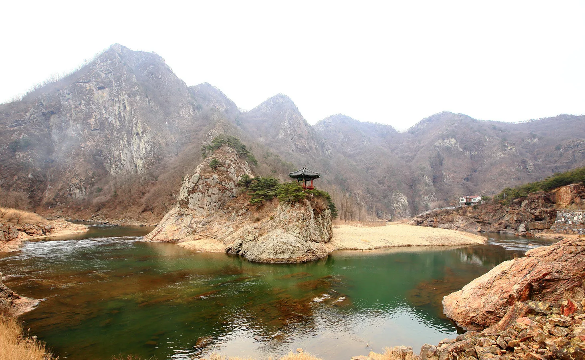
▲ 나뭇잎이 모두 진 계절의 월류봉과 월류정. 정자가 선 바위 언덕을 강물이 감싸고 돌며 모래톱을 만든다 사진=Wikimedia Commons (Seong Gyu Eok Men, CC BY-SA 3.0)
운전자라면 동선을 먼저 정하는 것이 중요하다. 둘레길은 편도 코스라 8.4km를 끝까지 걸으면 차가 출발점인 월류봉 광장에 남는다. 가장 무난한 방법은 경치가 가장 좋은 1구간을 왕복하는 것이다(왕복 약 5.2~5.4km). 반야사까지 모두 둘러보고 싶다면 1구간을 걸은 뒤 광장으로 돌아와 차로 반야사까지 이동하는 식으로 나누는 편이 현실적이다. 반야사 주변 주차 여건은 공식 안내에서 확인되지 않아 사찰(043-742-4199)에 미리 문의하는 것이 좋다.
4. 단풍·물안개, 언제 가야 제대로 보나
단풍은 10월 말~11월 초가 유력하다. 산림청이 9월 22일 발표한 '2026 가을 단풍 절정 예측지도'에 따르면 월류봉에서 가까운 속리산의 단풍 절정(산 전체의 50% 이상이 물드는 시점)은 10월 28일로 예측됐다. 충청권에서는 청주 미동산수목원 10월 27일, 계룡산 11월 1일로 전망됐고, 수종별로는 은행나무 10월 30일, 단풍나무·참나무류 10월 31일 절정이 예상된다. 전국 평균 절정은 최근 5년 평균보다 0.8일가량 늦을 것으로 봤다. 월류봉 자체는 예측 지점이 아니므로, 이 수치를 기준 삼아 10월 마지막 주 전후를 노리되 출발 전 현지 상황을 확인하는 것이 좋다.
물안개는 '맑고 바람 없는 밤 다음 날 이른 아침'이 핵심 조건이다. 기상청 설명에 따르면 복사안개는 맑은 밤 바람이 약할 때 지표면 온도가 급격히 떨어지면서 수증기가 응결해 생긴다. 강이 흐르는 계곡처럼 수증기가 많고 찬 공기가 고이기 쉬운 지형에서 잘 나타나며, 해가 떠 기온이 오르면 대부분 걷힌다. 일교차가 커지는 10월 중순 이후, 전날 밤 하늘이 맑고 바람이 잠잠했다면 일출 전후 이른 아침에 도착하는 것이 물안개를 만날 확률을 높이는 방법이다. 다만 안개는 기상 조건에 따라 전혀 생기지 않는 날도 많아 '보장된 풍경'은 아니라는 점은 알고 가자.
이름의 유래가 된 '달 걸린 월류봉'을 보고 싶다면 보름 전후 저녁을 노리는 것도 방법이다. 둘레길 자체는 24시간 개방이지만 야간에는 조명이 없는 구간이 있을 수 있어, 해가 진 뒤에는 광장 주변에서 감상하는 정도로 한정하는 편이 안전하다.
🌫️ 물안개·안개 낀 날 운전 팁
물안개가 좋은 날은 곧 도로에도 안개가 끼는 날이다. 황간IC에서 월류봉으로 이어지는 강변 국도·지방도는 새벽 시야가 크게 떨어질 수 있으므로 전조등(하향등)과 안개등을 켜고, 앞차와의 거리를 평소보다 넉넉히 두자. 상향등은 안개에 빛이 반사돼 오히려 시야를 가린다. 갓길이나 교량 위에 차를 세워 사진을 찍는 것은 사고 위험이 커 피해야 한다.
5. 반야사까지 — 둘레길의 종착지
둘레길 3구간이 끝나는 곳이 백화산 자락의 반야사(황간면 백화산로 652)다. 대한민국 구석구석은 반야사를 신라시대 고찰로 소개하며, 보물로 지정된 삼층석탑과 500년 된 배롱나무, 절벽 위 문수전을 볼거리로 꼽는다. 국가유산청에 따르면 영동 반야사 삼층석탑은 고려시대 석탑으로 2003년 3월 14일 보물로 지정됐다. 사찰 뒤편 산허리에는 꼬리를 치켜든 호랑이 모양의 거대한 돌무더기가 있어 '호랑이 바위'로 불린다.
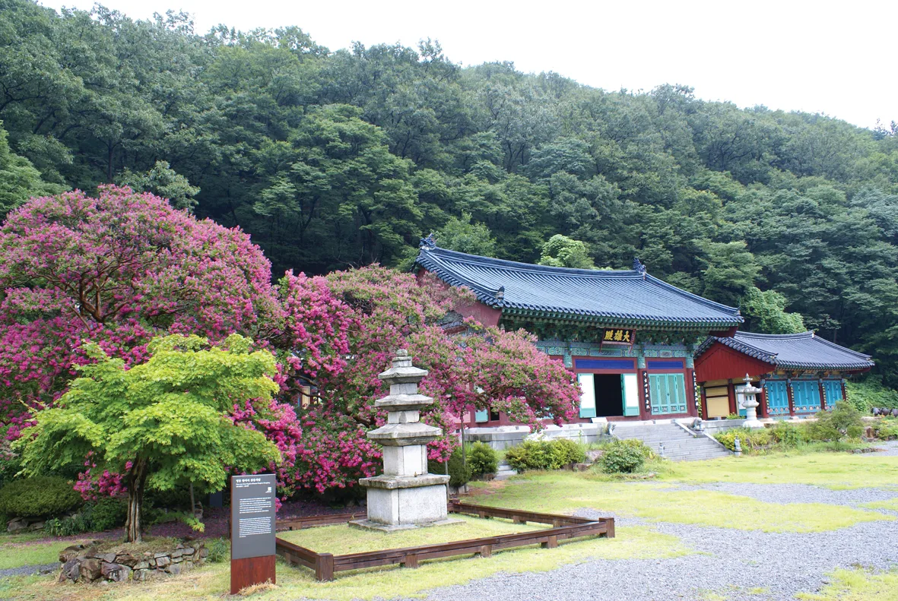
▲ 배롱나무꽃이 핀 여름철 반야사 경내와 삼층석탑. 가을에는 꽃 대신 주변 숲의 단풍이 경내를 채운다 사진=Wikimedia Commons (한국불교문화사업단, CC BY-SA 4.0)
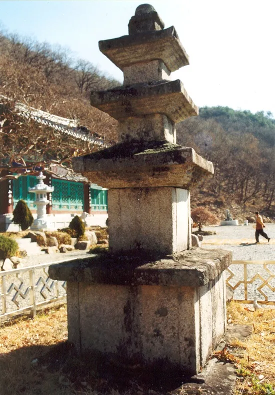
▲ 보물 영동 반야사 삼층석탑. 고려시대에 세워진 석탑이다 사진=Wikimedia Commons (국가유산청, 공공누리 제1유형)
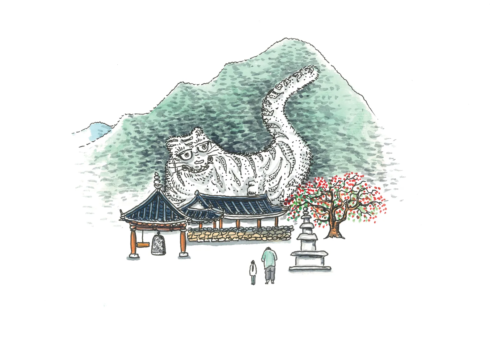
▲ 반야사 뒤편 산허리의 호랑이 모양 돌무더기를 수채화로 표현한 그림 그림=Wikimedia Commons (한국불교문화사업단, CC BY-SA 4.0)
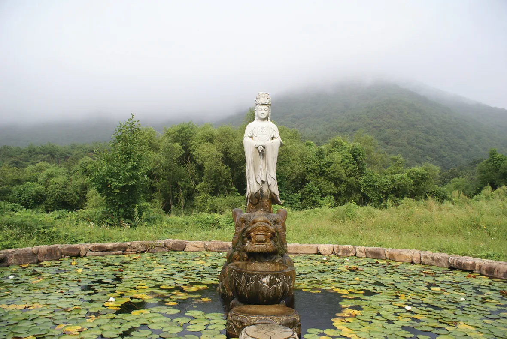
▲ 안개가 낮게 깔린 날의 반야사 연못과 석조 관음상 사진=Wikimedia Commons (한국불교문화사업단, CC BY-SA 4.0)
6. 주변 연계 코스 — 노근리, 와인터널, 국악축제
노근리 평화공원(황간면 목화실길 7)은 월류봉과 같은 황간면에 있다. 한국전쟁 초기인 1950년 7월 노근리 쌍굴다리 일대에서 피란민이 희생된 사건의 전모와 진상 규명 과정을 전시한 평화기념관, 교육관, 약 4만 평 규모의 공원으로 이뤄져 있다. 영동군은 이곳을 희생자와 유족의 명예를 회복하고 인권·평화를 교육하는 공간으로 소개한다. 관람 시간과 휴관일은 공식 홈페이지에서 확인되지 않아 방문 전 문의(043-744-1943)가 필요하다.
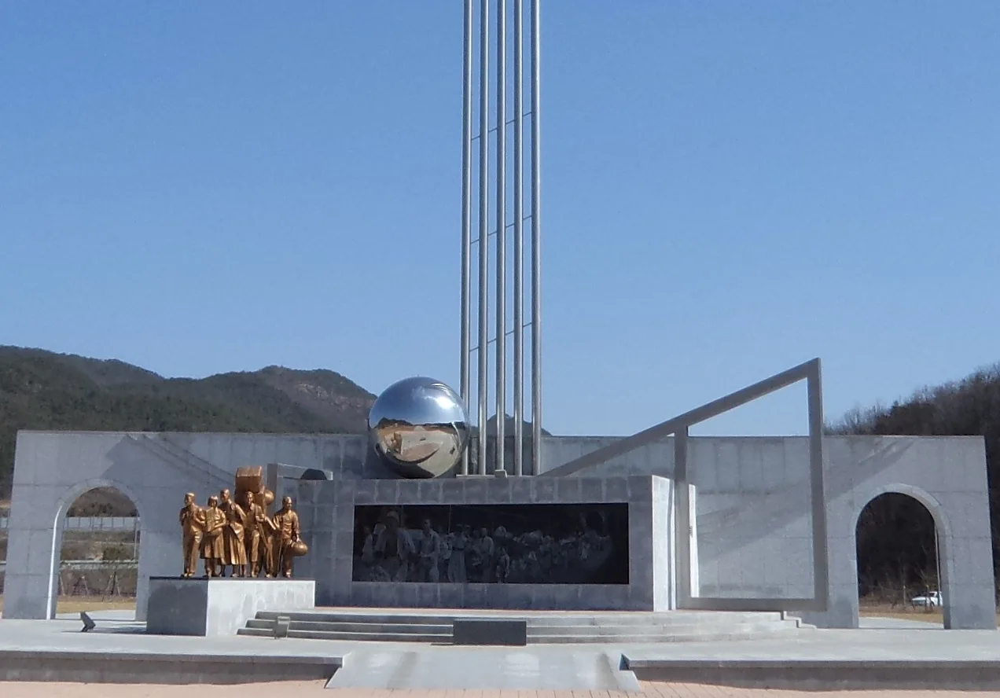
▲ 노근리 평화공원 위령탑. 1950년 피란민을 형상화한 조형물과 부조가 함께 세워져 있다 사진=Wikimedia Commons (No Gun Ri International Peace Foundation, CC BY-SA 3.0)
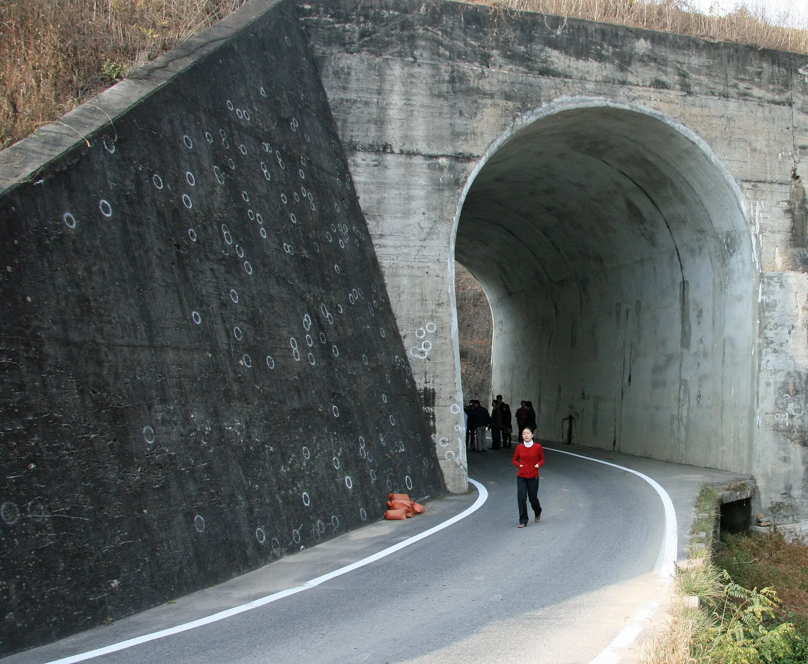
▲ 노근리 쌍굴다리 벽면. 흰 동그라미는 조사단이 총탄 흔적을 표시한 것이다(2008년 촬영) 사진=Wikimedia Commons (Cjthanley, CC BY-SA 3.0)
영동 와인터널(영동읍 영동힐링로 30)은 레인보우 힐링관광지 안에 있는 길이 420m의 와인 전시·시음 공간이다. 영동와인터널 공식 홈페이지 기준 관람시간은 10:00~18:00이고 매표는 종료 30분 전에 마감한다. 매주 월요일(공휴일이면 다음 날)과 설·추석 당일은 쉰다. 입장료는 성인 5,000원(20인 이상 단체 4,000원), 청소년·경로·군인 4,000원, 어린이(7~12세) 1,000원, 영동군민 3,000원이다. 운전자는 시음을 하면 운전대를 잡을 수 없으므로 동승자와 역할을 나누거나, 시음 없이 병 와인만 구입하는 방법을 고려하자. 영동 와인을 곁들인 가을 미식 코스는 추석 전후 가을 미식 드라이브 기사에서도 다뤘다.
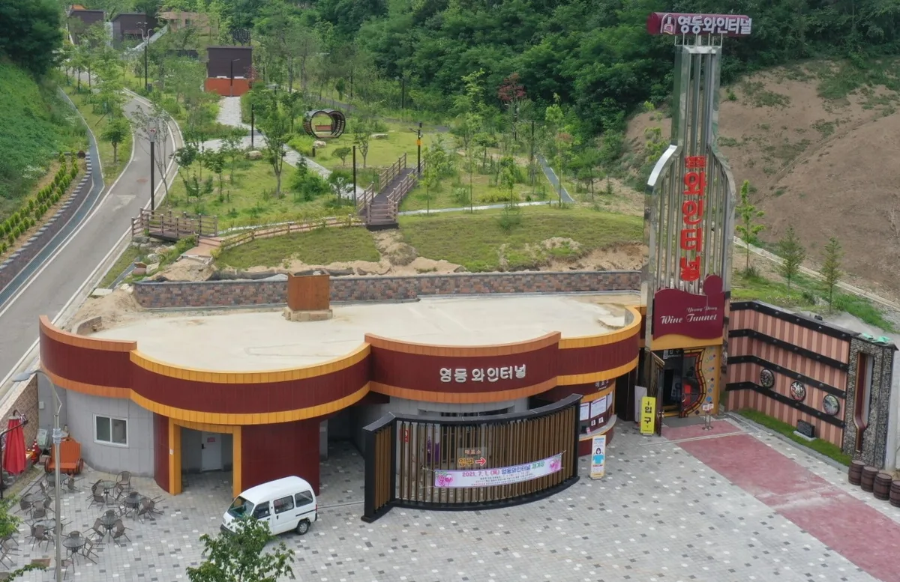
▲ 레인보우 힐링관광지 안의 영동 와인터널 입구 사진=Wikimedia Commons (Elsword2007, CC BY-SA 4.0)
제57회 영동난계국악축제는 올해 10월 15일(목)부터 18일(일)까지 같은 레인보우 힐링관광지 일원에서 열린다. 조선 3대 악성으로 꼽히는 난계 박연을 기리는 축제로, 영동군이 주최하고 영동군 문화관광재단과 난계기념사업회가 주관한다. 한국관광공사 축제 정보에 따르면 입장은 무료이고, 일부 체험은 5,000~15,000원이다. 국악·퓨전국악 공연과 세계민속춤 공연, 한복·전통놀이·국악기 제작 체험 등이 준비되며, 17일 오후 6시 30분에는 제21회 추풍령가요제가 함께 열린다. 자세한 일정은 영동군 문화관광재단 공식 홈페이지에서 확인할 수 있다. 축제 기간에는 관광지 주변 도로와 주차장이 붐빌 수 있어, 월류봉을 오전에 먼저 둘러보고 오후에 축제장으로 이동하는 동선을 권한다.
영동의 겨울 특산물인 곶감도 빼놓을 수 없다. 영동곶감축제는 매년 겨울 열리며, 2026년에는 1월 30일부터 2월 1일까지 영동천 하상주차장 일원에서 49개 곶감 농가가 참여했다. 2027년 일정은 아직 발표되지 않았다. 가을 여행에서는 축제 대신 지역 농가·직판장에서 곶감을 구입하는 정도로 즐길 수 있다.
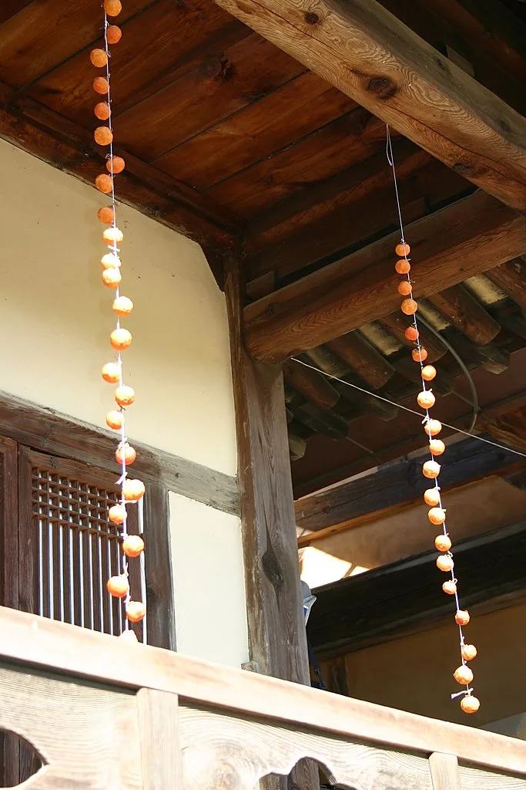
▲ 한옥 처마에 줄지어 매달아 말리는 감(참고 사진, 경북 안동 봉정사) 사진=Wikimedia Commons (Robert at Picasa, CC BY 3.0)
영동에서 서쪽으로 넘어가면 충남 금산이다. 가을 인삼·은행나무 여행을 곁들이고 싶다면 금산 가을 하루 코스 기사를 함께 참고하자.
7. 하루 코스로 정리하면
| 시간대 | 일정 | 포인트 |
|---|---|---|
| 이른 아침 | 황간IC → 월류봉 광장 도착 | 맑고 바람 없는 날 물안개 가능성, 안개 운전 주의 |
| 오전 | 둘레길 1구간(여울소리길) 왕복 | 왕복 약 5.2~5.4km, 월류정·한천팔경 조망 |
| 점심 전후 | 차로 반야사 이동 | 보물 삼층석탑, 호랑이 바위, 문수전 |
| 오후 | 노근리 평화공원 또는 영동 와인터널 | 와인터널 월요일 휴관, 매표 17:30 마감 |
| 해 질 녘 | 월류봉 광장으로 돌아와 석양·달 감상(선택) | 야간 둘레길 보행은 자제 |
▲ 단풍이 물든 산과 추수가 끝난 들판 사이 시골 도로를 달리는 SUV 이미지=AI 생성
✅ 출발 전 확인할 것
· 월류봉 광장 주차 요금·면수는 공식 표기가 없어 영동군(043-745-7741)에 확인
· 단풍 절정은 산림청 예측 기준 10월 말~11월 초, 출발 전 현지 상황 체크
· 물안개를 노린다면 전날 밤 맑음·약한 바람 예보 확인, 새벽 안개 운전 대비
· 둘레길은 편도 8.4km, 차량 회수를 고려해 구간 왕복 또는 차량 이동 병행
· 영동 와인터널은 월요일 휴관, 시음 시 운전 금지
· 영동난계국악축제(10/15~18) 기간 레인보우 힐링관광지 주변 교통 혼잡 대비
· 노근리 평화공원 관람시간은 방문 전 문의(043-744-1943)